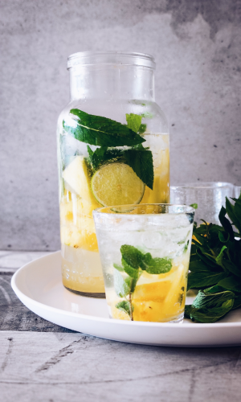
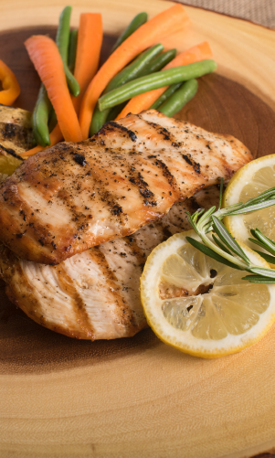
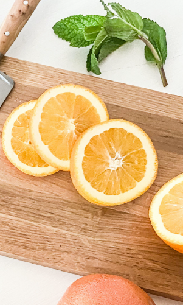

Simple Tips to Make Your Diet Healthier
A healthy diet has been scientifically proven to provide numerous health benefits, such as reducing your risk of several chronic diseases and keeping your body healthy. However, making major changes to your diet can sometimes seem very overwhelming. Instead of making big changes, it may be better to start with a few smaller ones. This article discusses a few changes that can make a regular diet a little bit healthier.
The pace at which you eat influences how much you eat, as well as how likely you are to gain weight. In fact, studies comparing different eating speeds show that fast eaters are up to 115% more likely to be obese than slow eaters Your appetite, how much you eat and how full you get is all controlled by hormones. These hormones signal your brain whether you’re hungry or full. However, it takes about 20 minutes for your brain to receive these messages, so eating more slowly would give your brain the time it needs to perceive that you are full.
Drinking enough water is important for your health. Many studies have shown that drinking water may benefit weight loss, weight maintenance and even slightly increase the number of calories you burn daily. Studies also show that drinking water before meals can reduce appetite and calorie intake during the subsequent meal in middle-aged and older adults.That said, the most important thing is to drink water instead of other beverages. This may drastically reduce your sugar and calorie intake
The pace at which you eat influences how much you eat, as well as how likely you are to gain weight. In fact, studies comparing different eating speeds show that fast eaters are up to 115% more likely to be obese than slow eaters Your appetite, how much you eat and how full you get is all controlled by hormones. These hormones signal your brain whether you’re hungry or full. However, it takes about 20 minutes for your brain to receive these messages, so eating more slowly would give your brain the time it needs to perceive that you are full.
It has been proven that the size of your dinnerware can affect how much you eat. Eating from a large plate can make your portion look smaller, while eating from a small plate can make it look bigger. Studies have supported this and shown that people tend to eat as much as 30% more when their food is served in a large bowl or on a large plate. Also, if you don’t realize that you’re eating more than usual, you will not compensate by eating less at the next meal.
Sugary beverages might possibly be the unhealthiest thing you can drink. They are loaded with liquid sugar, which has been linked to numerous diseases, including heart disease, obesity and type 2 diabetes. Also, your brain doesn’t register liquid calories the same way it registers solid calories. This means you don’t compensate for the calories you drink by eating any less. One 17-ounce (500-ml) sugary soda may contain about 210 calories.
The way you prepare your food can drastically change its effects on your health. Grilling, broiling, frying and deep-frying are all popular methods of preparing meat and fish. However, during these types of cooking methods, several potentially toxic compounds are formed, such as polycyclic aromatic hydrocarbons (PAHs), advanced glycation end products (AGEs) and heterocyclic amines. All of these compounds have been linked to several diseases, including cancer and heart disease
Good nutrition and exercise often go hand in hand. Exercise has been shown to improve your mood, as well as decrease feelings of depression, anxiety and stress. These are the exact feelings that are most likely to contribute to emotional and binge eating. Aside from strengthening your muscles and bones, exercise may help you lose weight, increase your energy levels, reduce your risk of chronic diseases and improve your sleep.
Fruits are very healthy. They are loaded with water, fiber, vitamins and antioxidants. Studies have repeatedly linked eating fruit to a reduced risk of several diseases, such as heart disease, diabetes and cancer. Because fruits contain fiber and various plant compounds, their sugars are generally digested very slowly and do not cause major spikes in blood sugar levels However, the same does not apply for fruit juices.
